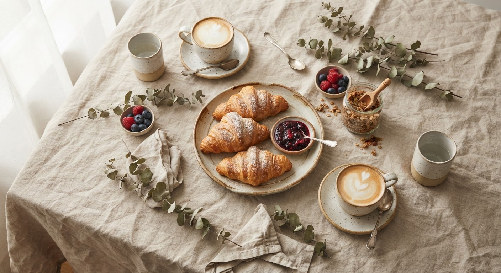
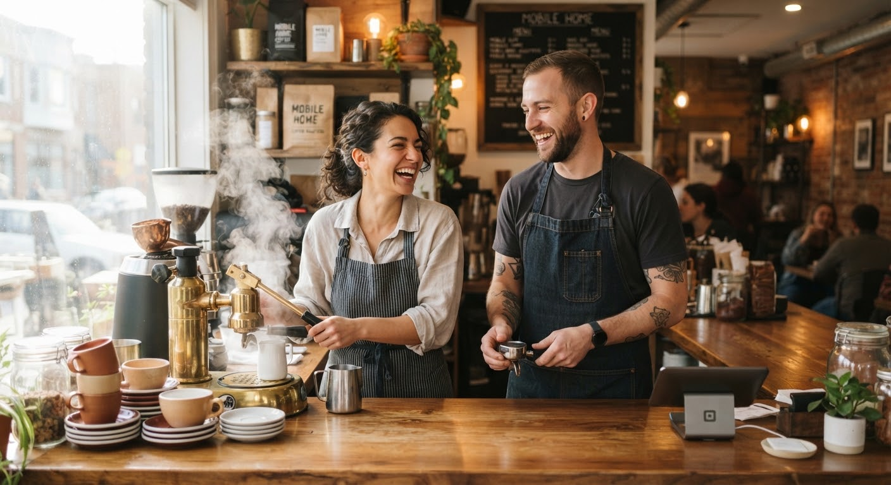
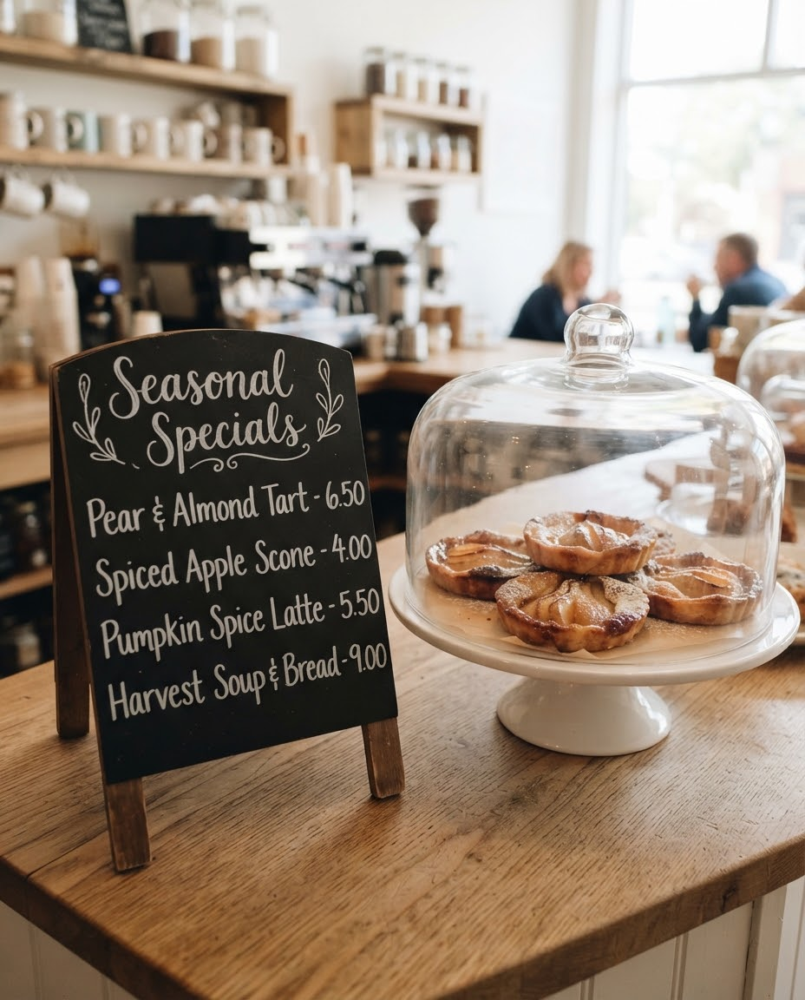
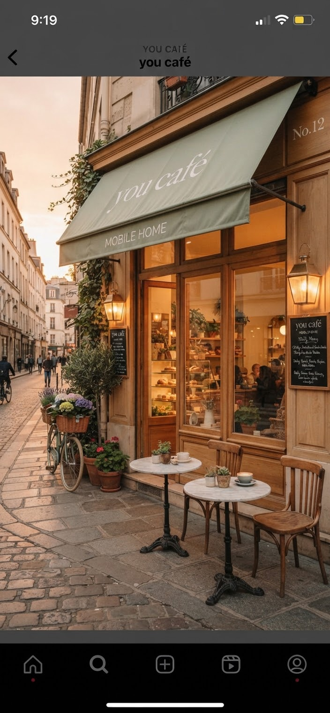
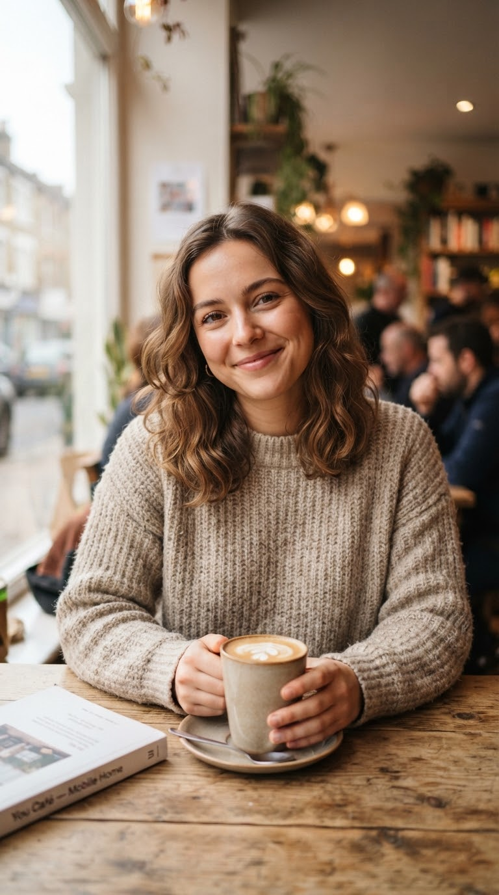
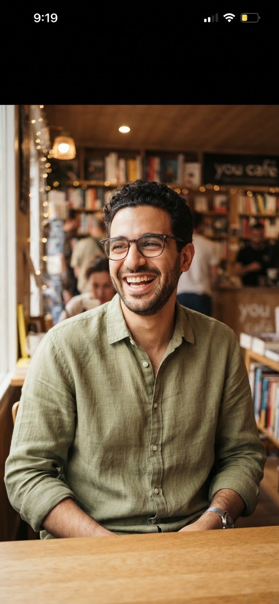
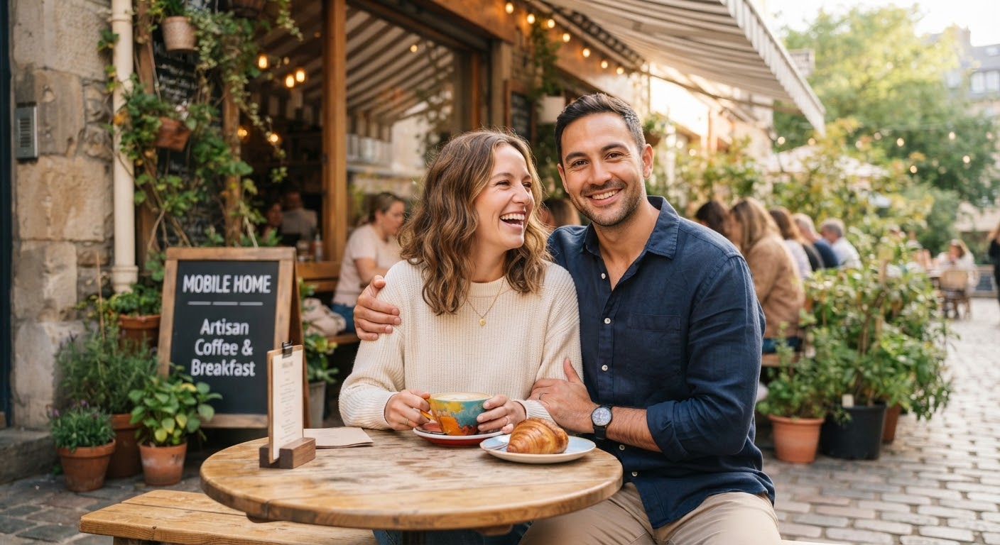
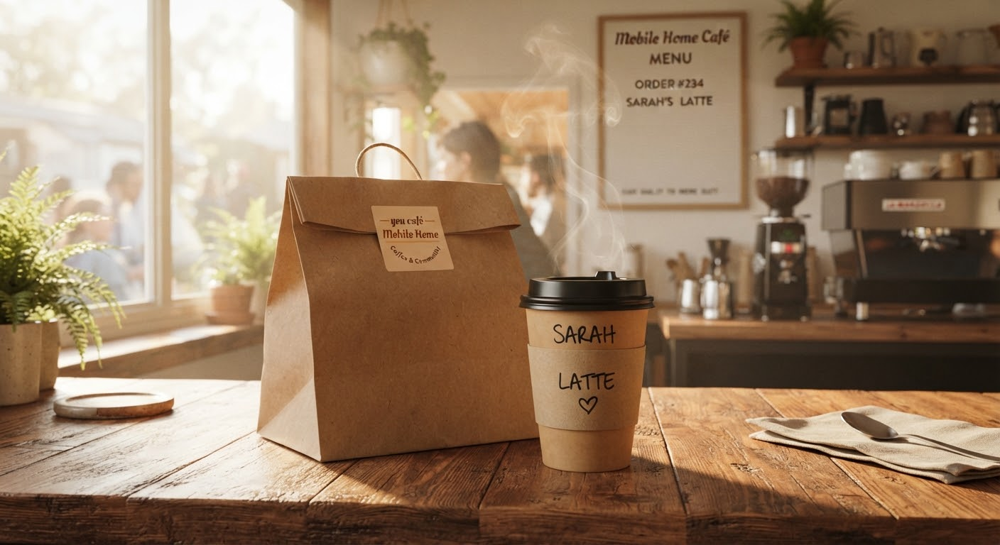

Your corner.
Your cup.
Welcome to you, a small neighborhood café where the coffee is slow, the bread is warm and your name is on the cup.

Our favorites, made for you
Four things regulars order again and again.

Honey Oat Flat White
Double ristretto, silky steamed oat milk and a thread of wildflower honey.

Cardamom Morning Bun
Baked every sunrise, glazed lightly and still warm at the counter.

Orange Cold Brew
Twelve-hour cold brew with fresh orange peel and sparkling water.

Garden Toastie
Sourdough, whipped feta, roasted peppers and basil.

“Every cup poured with patience and intention.”

A café with a name that says it all
“We called it ‘you’ because the best cafés aren't about the owners. They are about the people who sit down.”
Maya and Daniel opened the doors with six tables, one big oven and a promise to remember your order.
Counter Specials
Hand-lettered recipes straight from today's seasonal harvest.

Baked at 6:15 AM
Maple Cinnamon Latte
Our autumn favorite with real maple and a pinch of cinnamon.
Pear & Almond Tart
Soft frangipane, thin pear slices, a little apricot glaze.
Lentil & Carrot Soup
Warm, spiced and served with sourdough.
Come say hello
Step in, find a seat, and we will bring the rest.

42 Elm Street, Corner of Green
St. Jude District, Eastside
Kind words from our regulars

Sophie L.
“The only place where the barista remembers my order and my name. It really feels like it was made for me.”

Karim A.
“Best oat flat white in town, and the cardamom bun is dangerously good. I work here every Thursday.”

Hannah P. & Marcus T.
“A rare sanctuary from busy city mornings. Unhurried conversation and honest, warm baking every weekend.”

Order ahead, skip the line
Order online for pickup and your cup will be waiting with your name on it.